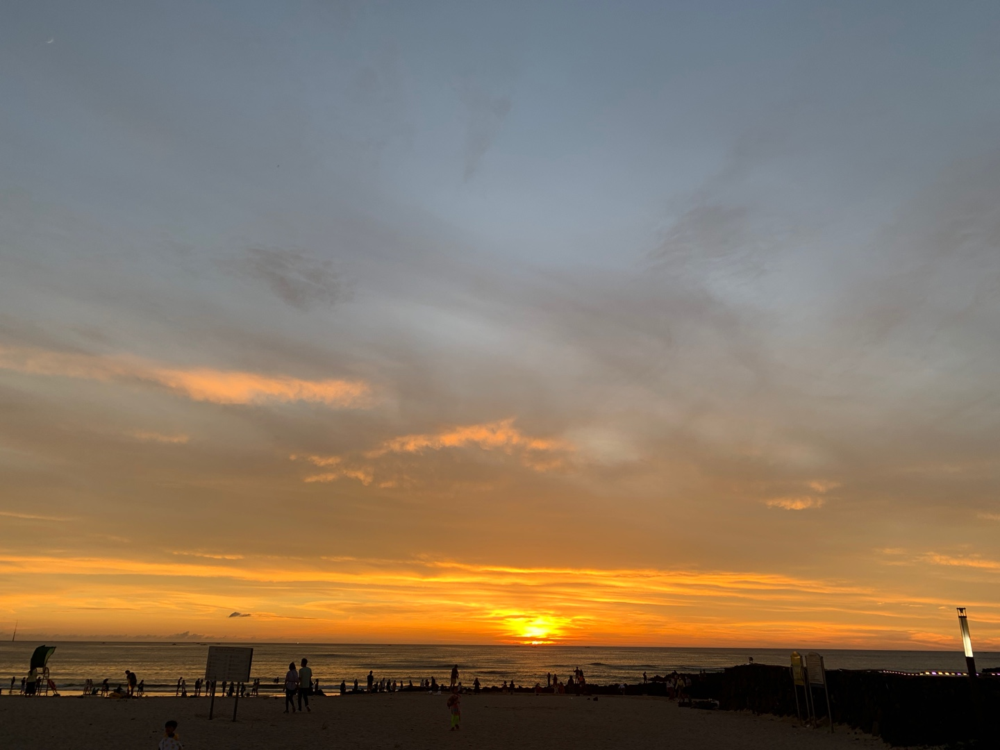
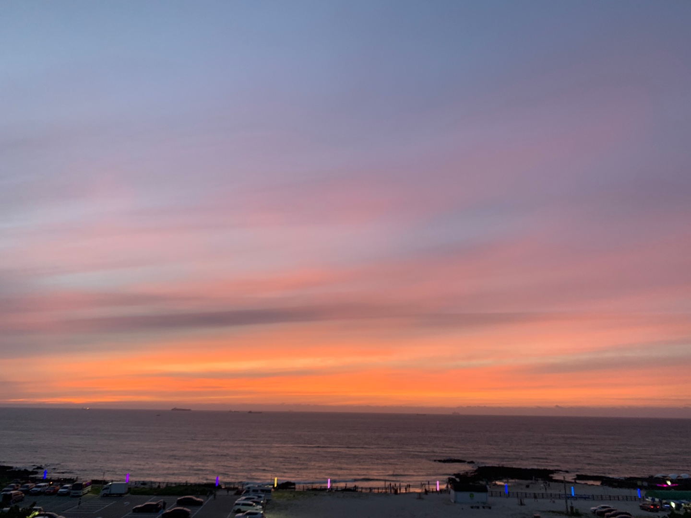
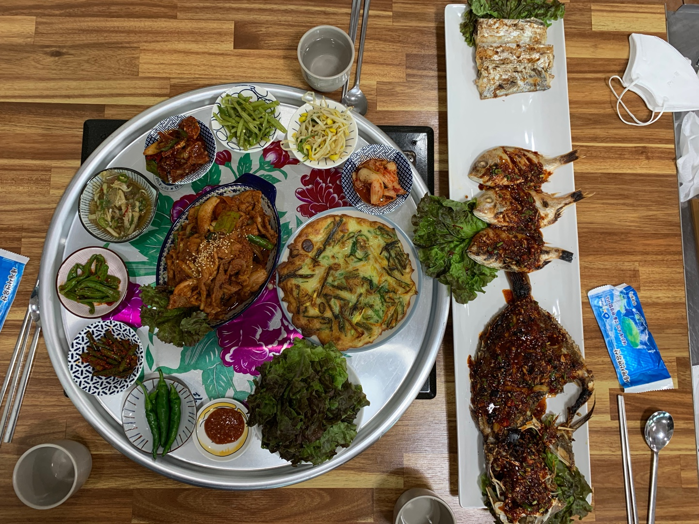
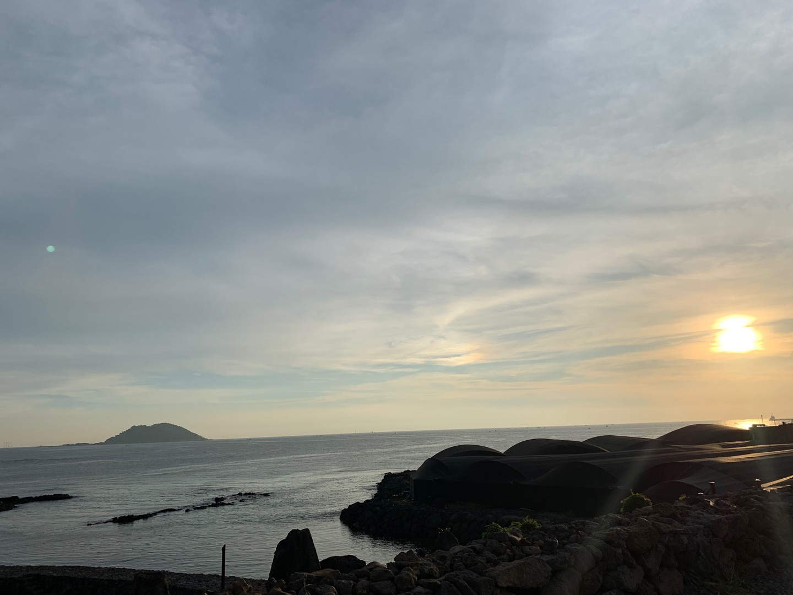

제주


좋은 기회를 놓치고 싶지 않았기에 계절학기가 끝나고 바로 제주도로 떠났다.
제주도는 정말 여유롭고 잔잔했으며 생각 정리하기에 좋은 장소였다.
그 중 나는 곽지해수욕장 앞 호텔에서 일했었는데 매일 퇴근하고 맥주 한 캔을 쥐고
바다를 아무생각 없이 시간가는줄도 모르고 하염없이 노을을 바라봤었는데
일이 너무 힘들고 나를 지치게 했지만 그래도 다시 돌아가고 싶을 만큼 정말 아름다웠던 곳이다.

